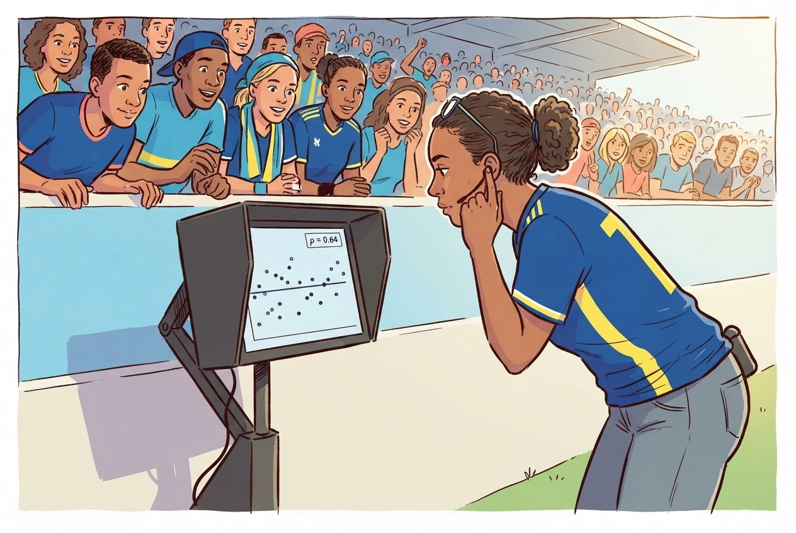
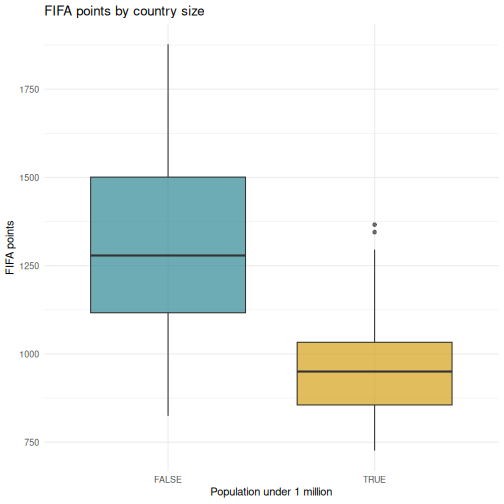
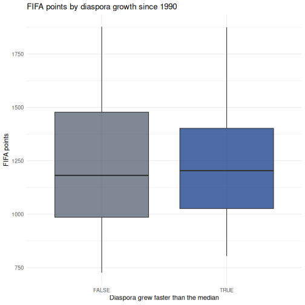
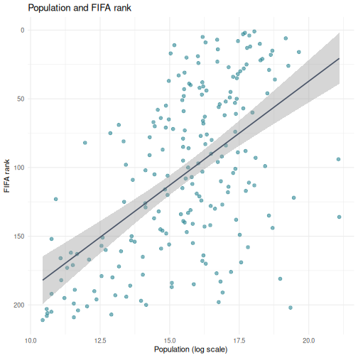

Statistical Analysis in R
Last updated on 2026-09-09 | Edit this page
Overview
Questions
- How do I run t-tests, correlations, and regression in R?
- How does R output compare to SPSS output tables?
- How do I extract and report results?
Objectives
- Run independent and paired samples t-tests
- Calculate correlations and run a chi-square test of independence
- Fit and interpret a simple linear regression
- Map R output back to familiar SPSS output tables
- Extract results as a tidy data frame using
broom

From SPSS dialogs to R functions
In SPSS every statistical test lives behind a menu: Analyze > Compare Means, Analyze > Correlate, and so on. In R each test is a single function call. The table below maps the SPSS dialogs you already know to their R equivalents:
| Analysis | SPSS menu path | R function |
|---|---|---|
| Independent-samples t-test | Analyze > Compare Means > Independent-Samples T Test | t.test(y ~ group, data = df) |
| Paired-samples t-test | Analyze > Compare Means > Paired-Samples T Test | t.test(x, y, paired = TRUE) |
| Bivariate correlation | Analyze > Correlate > Bivariate | cor.test(df$x, df$y) |
| Chi-square test | Analyze > Descriptive Statistics > Crosstabs | chisq.test(table(df$a, df$b)) |
| Linear regression | Analyze > Regression > Linear |
lm(y ~ x1 + x2, data = df) +
summary()
|
Load the data and packages:
R
library(tidyverse)
library(broom)
fifa <- read_csv("data/fifa_rankings.csv")
squad <- read_csv("data/blue_wave_squad.csv")
diaspora <- read_csv("data/diaspora_change.csv")
A quick word on normality
Parametric tests like the t-test assume roughly normal data, but they are surprisingly robust to violations of that assumption. A fast visual check with a histogram or a Q-Q plot is usually enough:
R
ggplot(fifa, aes(x = points)) +
geom_histogram(bins = 20) +
theme_minimal()
ggplot(fifa, aes(sample = points)) +
stat_qq() + stat_qq_line() +
theme_minimal()
As a rule of thumb, with n > 30 per group the
Central Limit Theorem does most of the work for you. With small samples
and visibly non-normal data, reach for a non-parametric alternative,
wilcox.test() instead of t.test(). The formal
Shapiro-Wilk test, shapiro.test(), is available when you
need it, but on large samples it flags trivial deviations, so always
look at the plot first.
T-tests
Independent-samples t-test
In SPSS you would go to Analyze > Compare Means > Independent-Samples T Test, move your test variable to the Test Variable box, move your grouping variable to the Grouping Variable box, and define the two groups.
In R it is one line. Do small states score fewer FIFA points than larger ones?
R
fifa_ss <- filter(fifa, !is.na(small_state))
t_result <- t.test(points ~ small_state, data = fifa_ss)
t_result
OUTPUT
Welch Two Sample t-test
data: points by small_state
t = 10.89, df = 107.62, p-value < 2.2e-16
alternative hypothesis: true difference in means between group FALSE and group TRUE is not equal to 0
95 percent confidence interval:
279.7292 404.2326
sample estimates:
mean in group FALSE mean in group TRUE
1309.624 967.643 Countries under a million people average around 968 FIFA points against roughly 1,310 for everyone else, a gap of about 342 points, and the confidence interval is nowhere near zero. Nothing surprising in that. Hold onto the number, because the regression later in this episode is where Curaçao gets interesting.
Reading the t-test output, SPSS comparison
The R output gives you the same information as the SPSS Independent Samples Test table, arranged differently:
| SPSS output column | R output line |
|---|---|
| t | t = ... |
| df | df = ... |
| Sig. (2-tailed) | p-value = ... |
| Mean Difference | difference between the two sample estimates |
| 95% CI of the Difference | 95 percent confidence interval: |
The key difference: SPSS shows Levene’s test for equality of
variances automatically. R’s t.test() uses the Welch
correction by default, which does not assume equal
variances. This is the better default, and many statisticians recommend
always using the Welch t-test.
If you need the equal-variances version, the “Equal variances
assumed” row in SPSS, add var.equal = TRUE:
R
t.test(points ~ small_state, data = fifa_ss, var.equal = TRUE)
Paired-samples t-test
A paired t-test compares two measurements on the same cases. The diaspora file records, for each country of origin, how many of its people lived abroad in 1990 and in 2024. Same countries, two time points, so the observations are paired.
R
pairs <- diaspora |>
filter(!is.na(diaspora_1990), !is.na(diaspora_2024), diaspora_1990 > 0)
nrow(pairs)
OUTPUT
[1] 233R
t.test(log(pairs$diaspora_2024), log(pairs$diaspora_1990), paired = TRUE)
OUTPUT
Paired t-test
data: log(pairs$diaspora_2024) and log(pairs$diaspora_1990)
t = 13.342, df = 232, p-value < 2.2e-16
alternative hypothesis: true mean difference is not equal to 0
95 percent confidence interval:
0.5745507 0.7736336
sample estimates:
mean difference
0.6740921 In SPSS this would be Analyze > Compare Means > Paired-Samples T Test, where you select the two variables as a pair.
Why we took logs first
Diaspora counts run from a few hundred to tens of millions. A handful of huge countries would otherwise dominate the mean difference entirely and the test would tell you about India and Mexico rather than about the pattern.
On the log scale the mean difference is about 0.67. Exponentiate it,
exp(0.674), and you get roughly 1.96: the typical country’s
diaspora almost doubled between 1990 and 2024. That is a statement about
the middle of the distribution, which is what you actually wanted.
Choosing a transformation is an analytical decision, not a technicality. Say in your writeup that you took logs and why.
Correlation
In SPSS: Analyze > Correlate > Bivariate. Move variables to the Variables box and select Pearson, Spearman, or both.
R
cor.test(fifa$log_population, fifa$points)
OUTPUT
Pearson's product-moment correlation
data: fifa$log_population and fifa$points
t = 9.4454, df = 205, p-value < 2.2e-16
alternative hypothesis: true correlation is not equal to 0
95 percent confidence interval:
0.4479344 0.6390481
sample estimates:
cor
0.550667 Reading correlation output, SPSS comparison
| SPSS output | R output |
|---|---|
| Pearson Correlation |
cor, the estimate at the end |
| Sig. (2-tailed) | p-value |
| N | implied by df, which is n minus 2 |
| 95% CI | 95 percent confidence interval |
One advantage of R: cor.test() gives you a confidence
interval for the correlation by default. SPSS does not show this unless
you use syntax.
For a correlation matrix of several variables, the SPSS correlation
table equivalent, use cor():
R
fifa |>
select(rank, points, log_population, diaspora, diaspora_per_capita) |>
cor(use = "complete.obs") |>
round(3)
OUTPUT
rank points log_population diaspora diaspora_per_capita
rank 1.000 -0.992 -0.562 -0.182 0.131
points -0.992 1.000 0.555 0.185 -0.137
log_population -0.562 0.555 1.000 0.567 -0.287
diaspora -0.182 0.185 0.567 1.000 0.073
diaspora_per_capita 0.131 -0.137 -0.287 0.073 1.000Note use = "complete.obs". Without it, every cell
touching a missing value returns NA. With it, R drops
incomplete rows. That is a choice you are making about your data, so
make it deliberately.
Chi-square: testing a crosstab
The squad data is categorical, so a t-test has nothing to work with. The right test for “are these two categorical variables related?” is chi-square. In SPSS: Analyze > Descriptive Statistics > Crosstabs, then tick Chi-square under Statistics.
Is a player’s chance of playing club football off-island related to which island called them up?
R
sq <- squad |>
mutate(
island = if_else(str_starts(team_code, "CUW"), "Curaçao", "Aruba"),
gender = if_else(str_ends(team_code, "M"), "Men", "Women"),
where_playing = if_else(club_country %in% c("CUW", "ABW"),
"Island league", "Abroad")
) |>
filter(club_country != "X") # drop players whose club is unknown
crosstab <- table(sq$island, sq$where_playing)
crosstab
OUTPUT
Abroad Island league
Aruba 35 9
Curaçao 41 7R
chisq.test(crosstab)
OUTPUT
Pearson's Chi-squared test with Yates' continuity correction
data: crosstab
X-squared = 0.21795, df = 1, p-value = 0.6406Read that p-value before you read anything into the table. It is nowhere near conventional significance. Both islands send most of their players abroad, and the small difference between them is the kind of thing 92 rows produce by chance. The honest conclusion is that this table does not show what it looked like it might show.
That is a result, and it is the point at which most people quietly try a different variable and report whichever one works. Do it openly instead. Here is the same question asked of gender rather than island:
R
crosstab_gender <- table(sq$gender, sq$where_playing)
crosstab_gender
OUTPUT
Abroad Island league
Men 46 3
Women 30 13R
chisq.test(crosstab_gender)
OUTPUT
Pearson's Chi-squared test with Yates' continuity correction
data: crosstab_gender
X-squared = 7.6643, df = 1, p-value = 0.005632That one is real. The men’s squads are almost entirely based overseas; the women’s squads keep a substantial share playing at home.
Two tests, and you have to say so
You have now run two chi-square tests on the same data and reported one null and one significant result. If you write up only the second, your p-value is not what it claims to be: you searched for it, and searching changes the odds of finding something.
The fix is not to avoid looking. It is to say how much you looked. “We tested island and gender; the island comparison was null” costs you one sentence and it is the difference between an analysis a reader can weigh and one they have to take on faith.
What that filter() line cost
you
We dropped every player whose club country was unknown before
building the table. That was necessary, because X is not a
place, and it also removed two players. A reader who never sees that
line has no way to know it happened.
Report it. One sentence in your methods section: “Two of 94 players were excluded because their club could not be established.” Here the exclusion is small enough not to change anything. You will not always be that lucky, and the habit is worth more than the two rows.
Linear regression
In SPSS: Analyze > Regression > Linear. Move the dependent variable to Dependent and the predictors to Independent(s).
Does population size predict FIFA points, and does the size of a country’s diaspora add anything on top of it?
R
reg_model <- lm(points ~ log_population + diaspora_per_capita, data = fifa)
summary(reg_model)
OUTPUT
Call:
lm(formula = points ~ log_population + diaspora_per_capita, data = fifa)
Residuals:
Min 1Q Median 3Q Max
-661.65 -148.66 -16.44 168.64 508.08
Coefficients:
Estimate Std. Error t value Pr(>|t|)
(Intercept) 155.135 122.704 1.264 0.208
log_population 68.746 7.525 9.136 <2e-16 ***
diaspora_per_capita 52.134 131.062 0.398 0.691
---
Signif. codes: 0 '***' 0.001 '**' 0.01 '*' 0.05 '.' 0.1 ' ' 1
Residual standard error: 229.3 on 199 degrees of freedom
(9 observations deleted due to missingness)
Multiple R-squared: 0.3086, Adjusted R-squared: 0.3017
F-statistic: 44.42 on 2 and 199 DF, p-value: < 2.2e-16Reading regression output, SPSS comparison
The summary() output contains everything from the SPSS
regression tables in a more compact format:
| SPSS table | R output section |
|---|---|
| Model Summary (R-sq) |
Multiple R-squared, Adjusted R-squared at
the bottom |
| ANOVA table (F-test) |
F-statistic at the very bottom |
| Coefficients table | The Coefficients: section |
| B (unstandardized) |
Estimate column |
| Std. Error |
Std. Error column |
| t |
t value column |
| Sig. |
Pr(>|t|) column |
R does not give you standardized coefficients (Beta)
by default. To get those, scale your variables first with
scale(), or use the lm.beta package.
Notice the line that says nine observations were deleted due to missingness. R tells you, every time, without being asked.
A predictor that does not work is still a result
Population is strongly related to FIFA points. Diaspora per capita, in this model, is not: its p-value is around 0.69, which is as far from significant as it gets. The model explains about 31 percent of the variance.
Do not delete that term and re-run to get a cleaner-looking table. You asked a question, the data answered no, and the honest writeup reports both coefficients. Quietly dropping predictors until only significant ones remain is how people produce findings that nobody can replicate, and it is easier to do in R than in SPSS precisely because re-running is so cheap.
Where does Curaçao sit?
A model is also a benchmark. The residual, what a country actually scores minus what the model predicted, tells you who is punching above their weight.
R
fifa_pred <- fifa |>
filter(!is.na(log_population), !is.na(diaspora_per_capita)) |>
mutate(
predicted = predict(reg_model, newdata = pick(everything())),
residual = points - predicted
)
fifa_pred |>
filter(iso3 %in% c("CUW", "ABW", "JAM", "ISL", "MLT")) |>
select(country, points, predicted, residual) |>
mutate(across(where(is.numeric), \(x) round(x, 1))) |>
arrange(desc(residual))
OUTPUT
# A tibble: 5 × 4
country points predicted residual
<chr> <dbl> <dbl> <dbl>
1 Curaçao 1295. 980. 314.
2 Iceland 1345. 1043. 302.
3 Jamaica 1358 1200. 158.
4 Malta 988. 1070. -82.4
5 Aruba 877. 966 -88.7Curaçao scores several hundred points more than its population predicts. Aruba scores slightly less than its population predicts. That gap, between two islands 80 kilometres apart, is the thing the squad data in Episodes 2 to 4 was describing from the other direction.
Reading R output with broom::tidy()
The raw R output is fine for interactive exploration, but it is hard
to export or combine with other results. The broom package
converts statistical output into tidy data frames, one row per term,
columns for estimate, standard error, test statistic, and p-value.
R
# Tidy the t-test result
tidy(t_result)
OUTPUT
# A tibble: 1 × 10
estimate estimate1 estimate2 statistic p.value parameter conf.low conf.high
<dbl> <dbl> <dbl> <dbl> <dbl> <dbl> <dbl> <dbl>
1 342. 1310. 968. 10.9 4.60e-19 108. 280. 404.
# ℹ 2 more variables: method <chr>, alternative <chr>R
# Tidy the regression coefficients
tidy(reg_model)
OUTPUT
# A tibble: 3 × 5
term estimate std.error statistic p.value
<chr> <dbl> <dbl> <dbl> <dbl>
1 (Intercept) 155. 123. 1.26 2.08e- 1
2 log_population 68.7 7.53 9.14 7.55e-17
3 diaspora_per_capita 52.1 131. 0.398 6.91e- 1R
# Get model-level statistics (R-squared, F, and so on)
glance(reg_model)
OUTPUT
# A tibble: 1 × 12
r.squared adj.r.squared sigma statistic p.value df logLik AIC BIC
<dbl> <dbl> <dbl> <dbl> <dbl> <dbl> <dbl> <dbl> <dbl>
1 0.309 0.302 229. 44.4 1.13e-16 2 -1383. 2774. 2787.
# ℹ 3 more variables: deviance <dbl>, df.residual <int>, nobs <int>The tidy() output is a regular data frame, which means
you can filter it, arrange it, or export it to CSV. That is surprisingly
difficult with SPSS output. It is also what makes automated reporting
possible, which is Episode 6.
A complete analysis workflow
Let us put everything together in a workflow that mirrors what you would do in SPSS, entirely in code. The research question: do small states underperform in football, and does Curaçao?
R
# Step 1: Descriptive statistics by group
fifa_ss |>
group_by(small_state) |>
summarise(
n = n(),
mean_points = mean(points),
sd_points = sd(points)
)
OUTPUT
# A tibble: 2 × 4
small_state n mean_points sd_points
<lgl> <int> <dbl> <dbl>
1 FALSE 163 1310. 255.
2 TRUE 44 968. 161.R
# Step 2: Visualise the distribution
ggplot(fifa_ss, aes(x = small_state, y = points, fill = small_state)) +
geom_boxplot(alpha = 0.7) +
scale_fill_manual(values = c("FALSE" = "#44759e", "TRUE" = "#f38439")) +
labs(
title = "FIFA points by country size",
x = "Population under 1 million",
y = "FIFA points"
) +
theme_minimal() +
theme(legend.position = "none")

R
# Step 3: Is the difference larger than sampling noise?
tidy(t.test(points ~ small_state, data = fifa_ss))
OUTPUT
# A tibble: 1 × 10
estimate estimate1 estimate2 statistic p.value parameter conf.low conf.high
<dbl> <dbl> <dbl> <dbl> <dbl> <dbl> <dbl> <dbl>
1 342. 1310. 968. 10.9 4.60e-19 108. 280. 404.
# ℹ 2 more variables: method <chr>, alternative <chr>R
# Step 4: Regression, controlling for population properly
tidy(reg_model) |>
mutate(across(where(is.numeric), \(x) round(x, 3)))
OUTPUT
# A tibble: 3 × 5
term estimate std.error statistic p.value
<chr> <dbl> <dbl> <dbl> <dbl>
1 (Intercept) 155. 123. 1.26 0.208
2 log_population 68.7 7.52 9.14 0
3 diaspora_per_capita 52.1 131. 0.398 0.691R
# Step 5: Model fit
glance(reg_model) |>
select(r.squared, adj.r.squared, p.value, AIC)
OUTPUT
# A tibble: 1 × 4
r.squared adj.r.squared p.value AIC
<dbl> <dbl> <dbl> <dbl>
1 0.309 0.302 1.13e-16 2774.Every step, from descriptives to regression to the chart, sits in a script you can re-run. If the rankings update next month or a reviewer requests a different cutoff for “small”, you change one line and run it again.
Challenge 1: Complete analysis workflow
Answer this question: do countries whose diaspora grew fastest since 1990 rank higher today?
Your workflow should include:
- Join
diasporatofifaoniso3 - Create a variable
fast_growththat isTRUEwhengrowth_1990_2024is above the median - Compute the mean and SD of
pointsfor each group - Draw a boxplot comparing the two groups
- Run an independent-samples t-test and tidy the result with
broom
R
joined <- fifa |>
inner_join(select(diaspora, iso3, growth_1990_2024), by = "iso3") |>
filter(!is.na(growth_1990_2024), is.finite(growth_1990_2024)) |>
mutate(fast_growth = growth_1990_2024 > median(growth_1990_2024))
# Descriptives
joined |>
group_by(fast_growth) |>
summarise(n = n(), mean_points = mean(points), sd_points = sd(points))
OUTPUT
# A tibble: 2 × 4
fast_growth n mean_points sd_points
<lgl> <int> <dbl> <dbl>
1 FALSE 104 1231. 296.
2 TRUE 103 1216. 255.R
# Boxplot
ggplot(joined, aes(x = fast_growth, y = points, fill = fast_growth)) +
geom_boxplot(alpha = 0.7) +
scale_fill_manual(values = c("FALSE" = "#605b54", "TRUE" = "#749c4c")) +
labs(
title = "FIFA points by diaspora growth since 1990",
x = "Diaspora grew faster than the median",
y = "FIFA points"
) +
theme_minimal() +
theme(legend.position = "none")

R
# Test
tidy(t.test(points ~ fast_growth, data = joined))
OUTPUT
# A tibble: 1 × 10
estimate estimate1 estimate2 statistic p.value parameter conf.low conf.high
<dbl> <dbl> <dbl> <dbl> <dbl> <dbl> <dbl> <dbl>
1 15.3 1231. 1216. 0.399 0.690 201. -60.4 91.0
# ℹ 2 more variables: method <chr>, alternative <chr>Whatever the p-value turns out to be, notice what this analysis cannot tell you. Countries whose diaspora grew are also countries that had reasons for people to leave, and those reasons are correlated with everything else about a country. A significant result here would not mean emigration builds football teams.
Challenge 2: Correlation and regression
Investigate the relationship between log_population and
rank:
- Run
cor.test()to get the Pearson correlation and p-value - Create a scatterplot with a linear trend line,
geom_smooth(method = "lm") - Fit a linear regression predicting
rankfromlog_population - Use
tidy()andglance()to extract the results - Interpret the sign of the coefficient. Why is it negative, and what would it have meant if it were positive?
R
# Step 1: Correlation
cor.test(fifa$log_population, fifa$rank)
OUTPUT
Pearson's product-moment correlation
data: fifa$log_population and fifa$rank
t = -9.5844, df = 205, p-value < 2.2e-16
alternative hypothesis: true correlation is not equal to 0
95 percent confidence interval:
-0.6438069 -0.4543741
sample estimates:
cor
-0.5562756 R
# Step 2: Scatterplot
ggplot(fifa, aes(x = log_population, y = rank)) +
geom_point(alpha = 0.6, size = 2, color = "#44759e") +
geom_smooth(method = "lm", color = "#605b54", linewidth = 0.8) +
scale_y_reverse() +
labs(
title = "Population and FIFA rank",
x = "Population (log scale)",
y = "FIFA rank"
) +
theme_minimal()

R
# Step 3 and 4: Regression
rank_model <- lm(rank ~ log_population, data = fifa)
tidy(rank_model)
OUTPUT
# A tibble: 2 × 5
term estimate std.error statistic p.value
<chr> <dbl> <dbl> <dbl> <dbl>
1 (Intercept) 340. 24.8 13.7 9.59e-31
2 log_population -15.1 1.58 -9.58 3.26e-18R
glance(rank_model)
OUTPUT
# A tibble: 1 × 12
r.squared adj.r.squared sigma statistic p.value df logLik AIC BIC
<dbl> <dbl> <dbl> <dbl> <dbl> <dbl> <dbl> <dbl> <dbl>
1 0.309 0.306 50.4 91.9 3.26e-18 1 -1104. 2215. 2225.
# ℹ 3 more variables: deviance <dbl>, df.residual <int>, nobs <int>Step 5. The coefficient is negative: each unit increase in log population is associated with a lower rank number. Lower is better in a ranking, so a negative coefficient means bigger countries rank better. If the coefficient had been positive it would have meant bigger countries rank worse, which is the opposite finding.
This is why scale_y_reverse() was in the plot. Rank
variables invert the usual reading of a coefficient, and it is an easy
place to state a result backwards.
- Every SPSS statistical test has a direct R equivalent, usually in a single function call
- R output is more compact than SPSS, and
broom::tidy()converts it to a clean table - Use
chisq.test()on a crosstab when both variables are categorical - A non-significant predictor is a result; do not drop terms to make the table look better
- Every row you filter out is a methods sentence you owe the reader
- Rank variables invert the sign of a coefficient, so say what direction means